The questions for this lab are embedded within the instructions.
Each question carries specific points, clearly indicated alongside it.
The questions have subsections within them.
The total score for this assignment is 10 points. Your final grade will be scaled from the total points you earn out of the maximum possible score to fit within a 0 to 10 scale.
When working on a lab, always create a dedicated folder for it and store all related files within that specific folder. For instance, avoid saving intermediate files in the C:/Documents directory; keep all materials organized and together.
Create a word document and name it as Lab-1-answers-YOURLASTNAME.docx. Insert each questions provided in this document and write down your answers for each questions. Upload the .docx file in Canvas. Do NOT upload a .pdf of the document.
Upload any additional file(s) required by this instructions in Canvas. You will find specific list of deliverables at the end of this page.
After a local article on fire response times, the Director of Public Safety briefed the City Council on ways to improve. The Planning Director pushed for a new fire station and, sensing support despite cost concerns, directed her team to start searching for potential sites. This is the first phase of the project, with spatial analysis to be used later to find the best location.
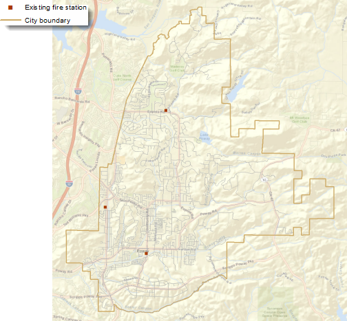
Fig. 1 There are currently three fire stations in the city—two in the southwest corner and one in the north.#
During the City Council meeting, members suggested using vacant city-owned parcels to cut costs for the new station. The Planning Director instructed her staff to start searching these areas and talk to the Public Works Department about any site requirements.
After meeting with Public Works, the Planning Department staff compiled site criteria. They created a table outlining each criterion, its purpose, specific values, and the GIS layers needed for analysis.
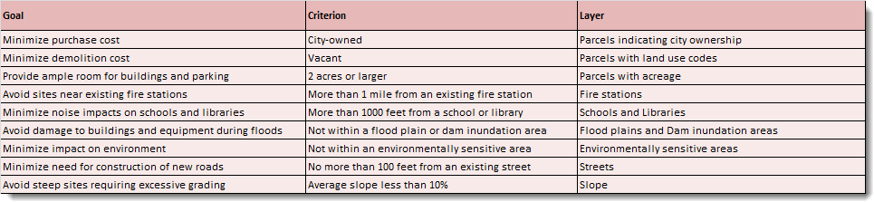
Fig. 2 Table showing goals, criteria and associated layer.#
The planners start with the characteristics of the parcels. They need to find vacant, city-owned parcels that are at least two acres in size. They first check the attributes in the layer of parcels within the City, originally obtained from the county tax assessor. They see that the OWNER field does in fact indicate which parcels are owned by the City, and the ASR_LANDUSfield (the assessor’s land-use codes) indicates which parcels are vacant (those with a value of 0, indicating no specified land use). They also see that there is a field for acreage, but for many of the parcels, the value is 0—clearly the data layer is incomplete for this attribute. So the planners will need to use GIS to calculate the acreage for each parcel. To maintain the original parcel layer in its current form, they make a copy of the parcels (calling the new layer Sites1), add a new field named ACRES_GIS, and calculate the values. One of the planners notes that there may be adjacent city-owned parcels that are less than two acres, but if combined, might create a valid site. After some discussion, the planners decide that, given the time and paperwork involved in having the Assessor’s Office merge any such parcels, they will only include existing two-acre (or larger) parcels in this initial search. If they come up empty-handed, they will look into including any parcels with the potential to be merged into larger sites.
With the attributes in place, the planners select the parcels that meet the three criteria. The search is quickly narrowed from over 15,000 parcels to 113.
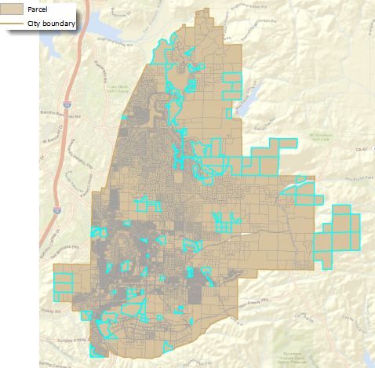
Fig. 3 Parcels within the city limits. Those that are owned by the City, are vacant, and are at least two acres in size are outlined in cyan.#
Now the planners will reduce the number of parcels further based on location. Given their knowledge of city planning, they know that in similar communities, fire stations are usually placed a mile or two apart. So, using selection based on location, they eliminate parcels that are within a mile of an existing fire station. They perform additional selections to eliminate parcels that are within 1,000 feet of a library or school. That narrows the candidates to 78.
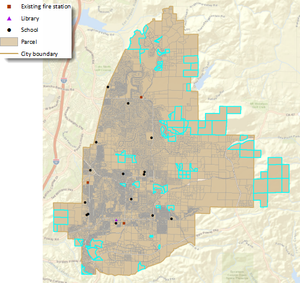
Fig. 4 The 78 remaining parcels are more than a mile from a fire station and more than 1,000 feet from a school or library.#
The next step is to remove parcels that are in excluded areas, such as floodplains, dam inundation zones, or environmentally sensitive lands. To speed up the process, they combine these three layers into a single layer, so they will need to do only one selection. This will save even more time if they need to rerun the analysis or use this criterion in the future for other site-selection analyses. After removing the parcels within these areas, they are down to 68 parcels.
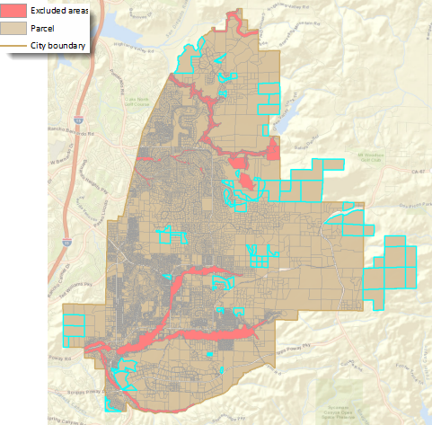
Fig. 5 Ten more parcels are removed from consideration because they fall at least partially within a flood zone, dam inundation area, or environmentally sensitive area.#
In reviewing the results, the planners notice that there may be some parcels that are only partially within excluded areas or partially within the specified distances around existing fire stations, libraries, and schools. These parcels could be potential sites. However, they decide that, for now, they will continue with the results. For one thing, the distances from fire stations, libraries, and schools they specified are minimums, so parcels that are completely outside the distance are preferable. Similarly, parcels that are completely outside the excluded areas are also preferable. As they did with the small, adjacent parcels they discussed earlier, they decide that if their search does not result in any viable candidate sites, they can reconsider any parcels that may be partially within these areas.
Next, the planners turn their attention to the minimum site construction requirements. While the final site will need to undergo soil and other engineering tests, at this early stage of the process, the planners want to make sure any potential sites can be accessed from existing roads without the need for more than a long driveway and are not too steep to build on. From the currently selected parcels, they select those that are within 100 feet of an existing road, reducing the number of potential sites to 30.
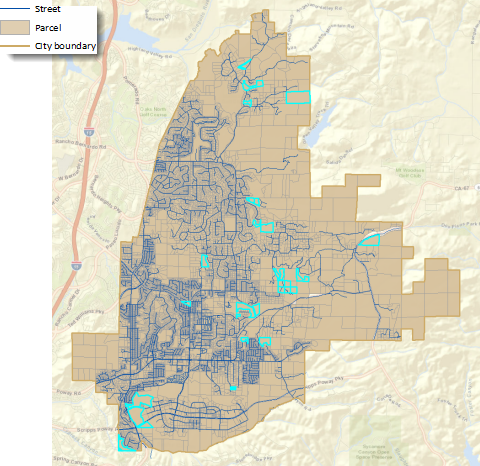
Fig. 6 Selecting parcels within 100 feet of an existing street eliminates another 38 potential sites, including most of the large parcels along the rural eastern edge of the City.#
The final step is to select parcels with an average slope of less than 10 percent. That will identify sites that require less grading to create a level building pad and parking area as well as driveways that are not too steep for trucks to navigate.
Up to this point, the planners have been doing a series of attribute and spatial selections on a single layer, Sites1. The next step involves a GIS tool that will calculate the average slope for each parcel. The tool does not operate on a selected set of features, so the planners export the selected parcels to a new dataset, which they call Sites2.
At this point, they also decide to add a two-digit ID to each of the parcels to make it easier to refer to the final candidates. While the parcels have several unique IDs (including two versions of the assessor’s parcel number as well as another parcel ID), these are all between 6 and 10 digits and would be unwieldy for display on maps and in tables as well as for discussion among decision makers.
Using an existing raster slope layer from the City’s GIS database, the planners calculate the average slope for the parcels and select those with a value less than 10 percent.
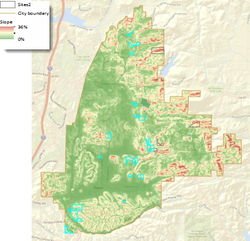
Fig. 7 Slopes in the city range from 36 percent (dark red areas) to 0 percent, or flat (dark green areas). The 25 selected parcels have an average slope of less than 10 percent. The parcels on steeper slopes are outlined in dark gray.#
The planners now have 25 suitable sites. They make a web map for the Planning Director to review. She is impressed but decides that before sharing the map with too many other officials, she should run the potential sites by the Assistant Fire Chief in charge of Facilities.
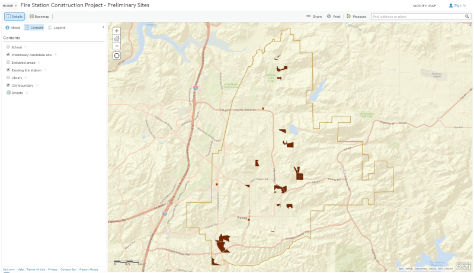
Fig. 8 The web map displays the existing fire stations and candidate sites and allows the Planning Director to also display schools, the library, and excluded areas.#
The Assistant Chief pulls up the map on his tablet and quickly spots an issue: some of the identified sites are too far from major roads. He explains to the Planning Director that the new fire station, like the existing ones, needs to be within 1,500 feet of a major road. This proximity is crucial because it reduces the time fire trucks spend navigating residential neighborhoods, allowing them to respond faster by using major roads where they can drive at higher speeds.
The Planning Director, aware that they are still early in the analysis process, knows her team can refine their search to focus on more suitable sites.
The planners review the identified parcels along with the major roads and streets. They realize that while they could select parcels within 1,500 feet of a major road using a straight-line distance, this method might not be accurate enough. Previously, straight-line distances worked well for tasks like avoiding sites near existing fire stations, minimizing noise near libraries and schools, and identifying parcels close to streets for potential driveways. However, for this situation, they need a more precise approach that considers actual driving distance over existing streets, as fire trucks would.
After considering a few options, the planners decide on an efficient method. They will use GIS to trace routes along streets that are 1,500 feet from each site. Then, they will select the traces that intersect with a major road and identify which sites these traces belong to—these will be the sites within 1,500 feet of a major road when driving.
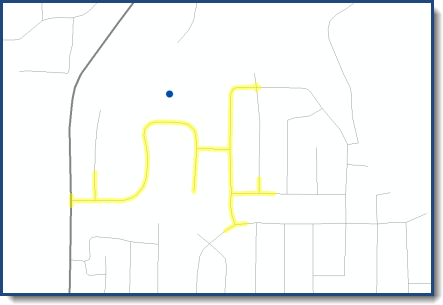
Fig. 9 In this diagram, the blue dot represents a candidate site, the thin gray lines are local streets, and the thick gray line a major road. The GIS traces along streets outward from the site up to 1,500 feet (the yellow highlight). In this case, the trace line does intersect the major road, so this site meets the criterion.#
The planners run their analysis. It works! From the 25 parcels, they have identified eight that are within 1,500 feet of a major road.
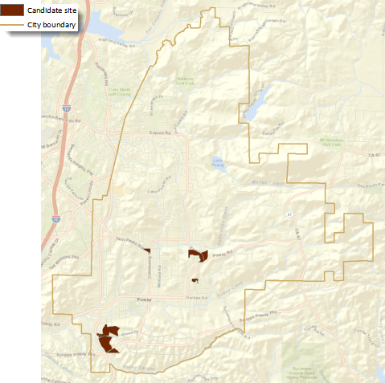
Fig. 10 These eight sites meet all the criteria for a fire station location.#
They are confident this final set of candidate sites will hold up to the scrutiny of the Planning Director, the Public Works Department, and the Fire Department officials. Even though the final site will be selected using additional spatial analysis in the next phase of the project, the planners know that the council members will want to understand how the candidate sites were selected so they can explain the process to their constituents. They create a story map explaining the selection process and the results.
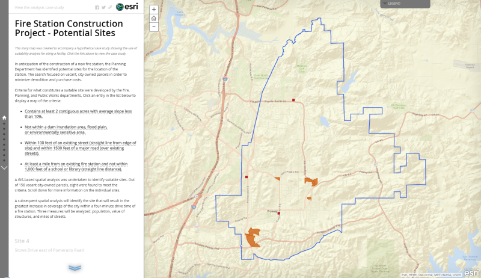
Fig. 11 The story map contains maps of the criteria as well as images for each of the potential sites.#
As it happens, the city council is scheduled to meet the following day to take up the issue of the new fire station. The chatter around City Hall is that the members are likely to approve funding for the new station. The Planning Director’s foresight paid off—she will be ready to present the potential sites to the city council at the end of their meeting, using the story map. Once the project is approved, the department will be ready to move ahead with the next phase—identifying the optimum site for the new station from the eight candidates.
Read the case study about how the Planning Department identified the optimum site using Location-Allocation analysis.
Select the sites that meet the attribute and location criteria#
Before starting the analysis, you will want to make a copy of the parcels data in the Project pane or export it to a new dataset in ArcGIS Pro. Then calculate a POLY_AREA field using Add Geometry Attributes (use Acres as the Area Unit.)
Question 1
a. What is the name and EPSG code of the coordinate system for the parcels shape? (Hint: You can google it. However, there are two answers to the code as it has been changed. I will accept either one.) <1 pt>
b. What is the unit of measurement for this coordinate system? <1 pt>
c. There is an ACREAGE column in the attribute table, but why we are recalculating it? Did you see any difference? <1 pt>
Use Select Layer By Attribute to select the parcels that are owned by the City (OWNER='CITY'), are vacant (ASR_LANDUS=0), and are at least two acres in size (POLY_AREA>=2) . Use the default selection method (New Selection).
a. How many number of parcel features are there? <1 pt>
b. What is the smallest parcel area in acres? <1 pt>
c. What is the largest parcel area in acres? <1 pt>
d. How many parcels you found after using the Query? <1 pt>
Use Select Layer By Location to identify the parcels that are more than a mile from existing fire stations and more than 1,000 feet from schools and libraries. In fact, you will be eliminating the parcels that fall within these distances, so make sure the Selection Type is set to remove from the current selection. You will do three separate selections in quick succession. The Input Features Layer (parcels) remains the same for each selection, as does the Relationship (Within a distance); you will change the Selecting Features and distance as needed.
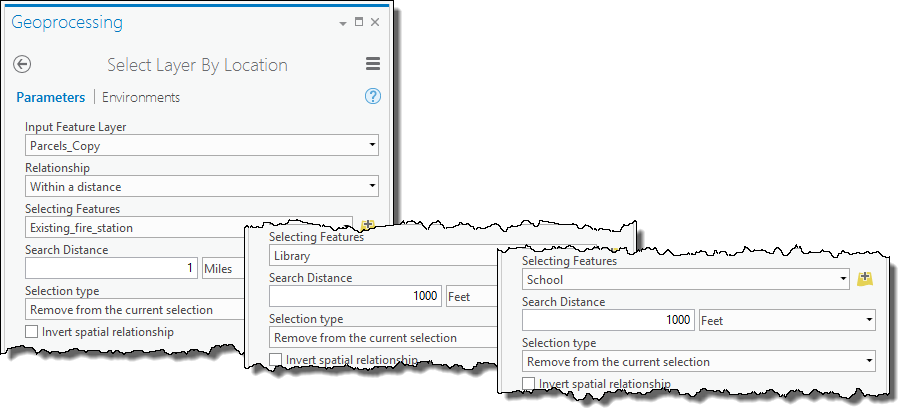
Fig. 13 Input parameters for select layer by location.#
Question 3
a. How many parcels are selected after these filtering? <1 pt>
Use the Union tool to combine the floodplain, dam inundation, and environmentally sensitive areas to create a layer of excluded areas.
Use Select Layer By Location to identify the parcels that are outside the excluded areas. Remove the parcels that fall within these areas; keep the Selection type set to remove from the current selection. Set the Selecting Features to the excluded_areas layer you just created and the Relationship to Intersect.
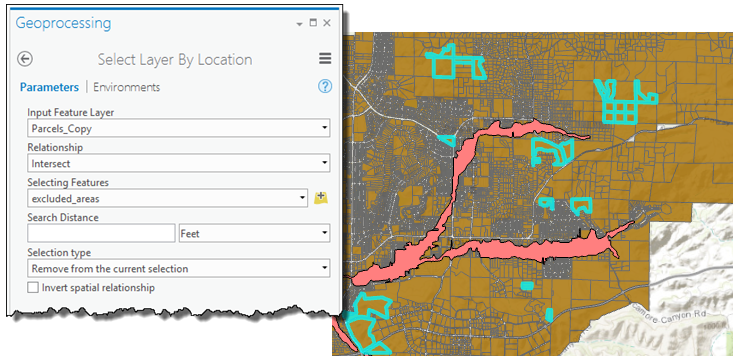
Fig. 15 Parameters to select parcels outside the excluded areas.#
Question 4
a. How many parcels are selected after filtering the excluded areas? <1 pt>
Use Select Layer By Location to select the parcels that are within 100 feet of a street. Set the Selection type to Selectsubsetfromthecurrentselection. Set the Selecting Features to the streets layer, set the Relationshiptowithinadistance, and apply a search distance of 100 feet.
Question 5
a. How many parcels are selected after filtering the streets? (Hint: if your answer is not 30. go back and double check everything you did.) <1 pt>
Calculate the IDs. To do this, in the Calculate Field dialog box enter the Python code below into the Code Block area (you can also cut and paste the code).
In the smaller box, below the Pre-Logic Script Code, type the following:
autoIncrement()
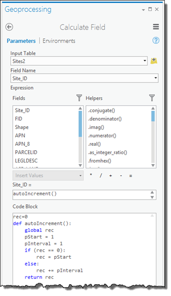
Fig. 17 Adding the code block to the Calculate Field dialog box.#
Question 6
a. What could be an alternative (but easier) way to calculate Site_ID instead of this Python solution? <1 pt>
Find the sites that have average slope less than 10 percent#
Add a field to hold the average slope values (which will be calculated in the next step). Create it as a float type and name it Avg_Slope.
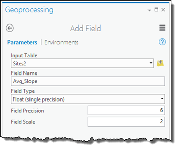
Fig. 18 Add Field dialog box to store the slope values.#
Use the Zonal Statistics as Table tool to calculate the average slope for each potential site. This tool, which is available with ArcGIS Spatial Analyst extension, calculates statistics such as the mean, sum, minimum, or maximum for each zone from the values in a raster layer. In this analysis, the zones are the potential site polygons in Sites2 and the raster layer is Slope. The result is a table with a row for each zone (potential site) with a field for the calculated statistic, mean slope. Specify Site_ID as the Zone field and Mean as the statistic to calculate.
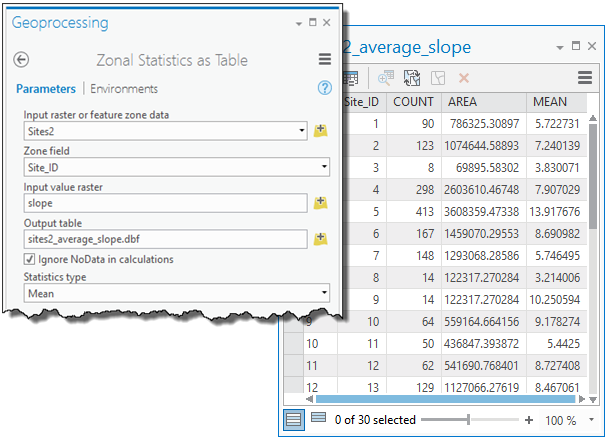
Fig. 19 Dialog box used to calculate zonal statistics as a table.#
Join the zonal statistics table to the Sites2 attribute table, using Site_ID as the field to join.
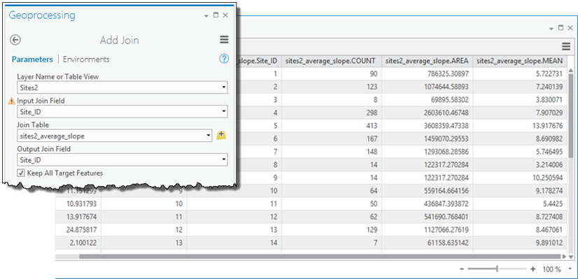
Fig. 20 Add Join dialog box used to join the data back to the sites.#
Calculate the Avg_Slope field you added earlier to be equal to the MEAN field from the zonal statistics table, which will add the average slope value to the table of potential sites without having to maintain the join. Then remove the join.
Use Select Layer By Attribute to select the parcels that have an average slope less than 10 percent. Use the default selection method (Newselection).
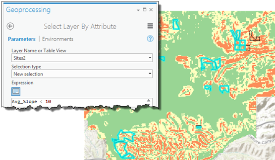
Fig. 22 Select By Attributes dialog box used to select areas of slope less that 10 percent.#
Question 7
a. How many parcels are selected after filtering for average slope? <1 pt>
Find the sites within 1,500 feet of a major road over streets#
For this analysis you will use ArcGIS Network Analyst extension. Network Analyst requires the sites be represented as point locations. First, use the Feature To Point tool to create a layer of points from the Sites2 polygons (only the currently selected sites will be converted). Specify that the points be located inside the original parcel features.
The Network Analyst service area solver will find streets within a given distance of a location. In the Analysis tab, create a new Service Area from the Network Analysis drop down. Go to the Network Analyst tab.
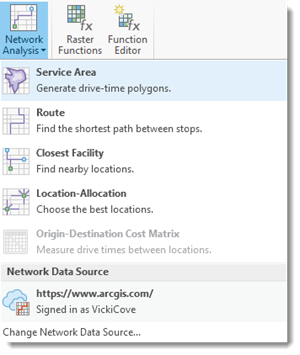
Fig. 24 Create a New Service Area in Network Analyst.#
Question 8
a. What is the difference between creating a buffer around a point and creating a service area aroung a point? To learn more, visit this link and navigate to service area. <1 pt>
Click Import Facilities from the Service Area Layer tab. Load the site point locations using Site_ID as the Field Name.
In the Service Area tab, set the Mode to DistanceinFeet and the Cutoff to 1500. Change the Output Geometry to Lines. The lines will include the network source fields by default, which will allow you to link the generate service area lines - representing streets within 1,500 feet of a site - back to the original streets layer to find out which lines are coincident with major streets.
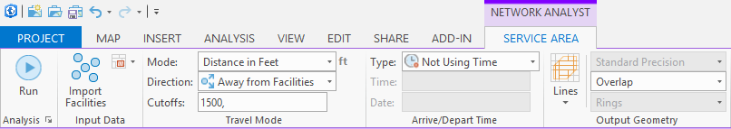
Fig. 26 Generating services areas using Network Analyst.#
Question 9
a. Why the Cutoffs is selected as 1500Feet? Why we could not use a simple buffer in this case? (Hint: Read the background of this lab) <1 pt>
Click Run on the Service Area tab to calculate and display the service area Lines sublayer (located under Service Area in the Contents pane). The attribute table for the lines contains the ID of the site each line is associated with (FacilityID) as well as the ID of the underlying street (SourceOID).
To find out which of the service area lines correspond to major roads, join the streets layer (using ObjectID as the join field) to the service area lines (using SourceOID as the join field). Uncheck Keep All Target Features.
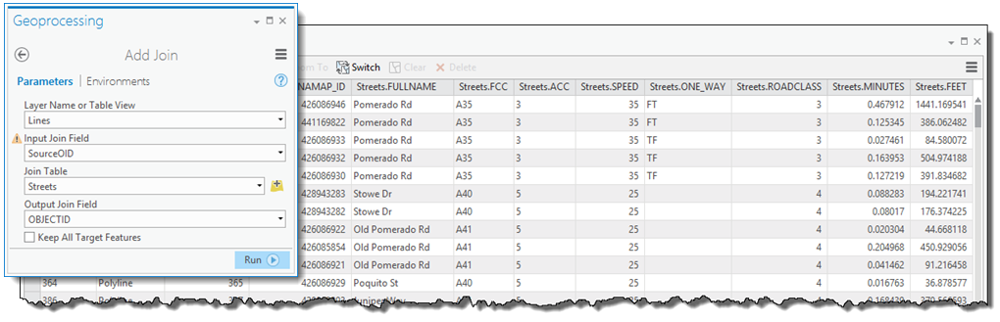
Fig. 28 Using Add Join to link the service area lines to the streets.#
The attribute table for the service area lines now contains the road class field (ROADCLASS), along with all the other fields from the streets layer. Select the lines with ROADCLASS=3 (these are the major roads). Remove the join and export the selected service area lines to a new dataset. Name it sa_lines_major.
To find out which sites (facilities) are associated with one (or more) of the lines representing major roads, join sa_lines_major (using FacilityID as the join field) to the Facilities sublayer (using ObjectID as the join field). Uncheck Keep All Target Features. This will identify the sites for which at least one of the roads within 1,500 feet is a major road.
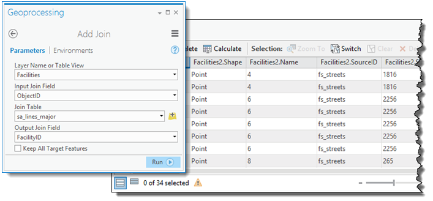
Fig. 30 Add Join dialog box to join the facilities to the roads.#
While all the facilities listed in the output table have at least one major road within 1,500 feet, some have more than one (as you can see from the Facilities.Name field). When using ArcGIS Pro, Add Join keeps all the features from the sa_lines_major layer that have a match in the Facilities layer—there are 34, as it turns out. This is unlike performing the join in ArcMap, where—for a given facility—only the first matching feature from the sa_lines_major layer is kept. To extract the individual candidate features you’ll need to create a table containing one record for each facility.
Fig. 34 The facilites_sa_lines_major_frequency attribute table.#
The frequency table lists the eight suitable candidate sites. Join this table to the Facilities layer to identify the corresponding Facility point features. Again, make sure to uncheck Keep All Target Features.
The layer of candidate sites contains points, which can be used in the Location-Allocation analysis to select the optimum site. To create a layer of the suitable sites with their original parcel boundaries, for display purposes, use Select Layer By Location with the Sites2 layer. Set the Selection type to Selectsubsetfromthecurrentselection, the Selecting Features as site_candidates_point, and the Relationship to Intersect.
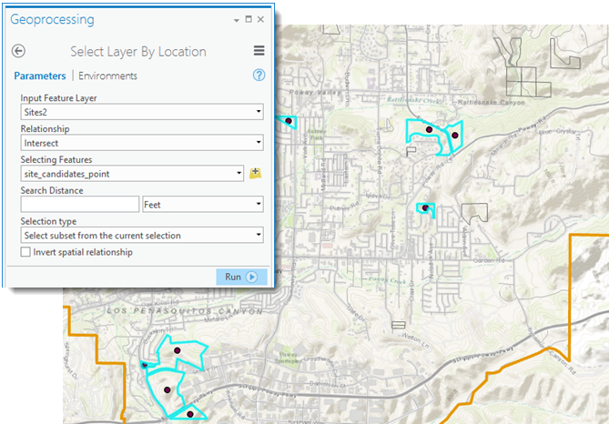
Fig. 37 Select the points with the site polygons.#
Export the selected sites to a new dataset, site_candidates_poly, and clear any remaining selections.
a. Submit a map with the candidate site locations as you see fit. Be sure to create a visually pleasing map with other layers, necessary labels, basemap so that your stakeholders understand the message you want to give. Use your best judgements on creating a good map. Submit a pdf version of the map. <5 pt>
b. Did you learn any new geoprocessing tool today? If yes, what was that and give one sentence explanation of that geoprocessing tool. If not, then specify in what capacity you used the Network Analyst before? <2 pt>
c. Give me at least one other criteria that could be used in this preliminary analysis. (Hint: it does not have to be perfect) <2 pt>